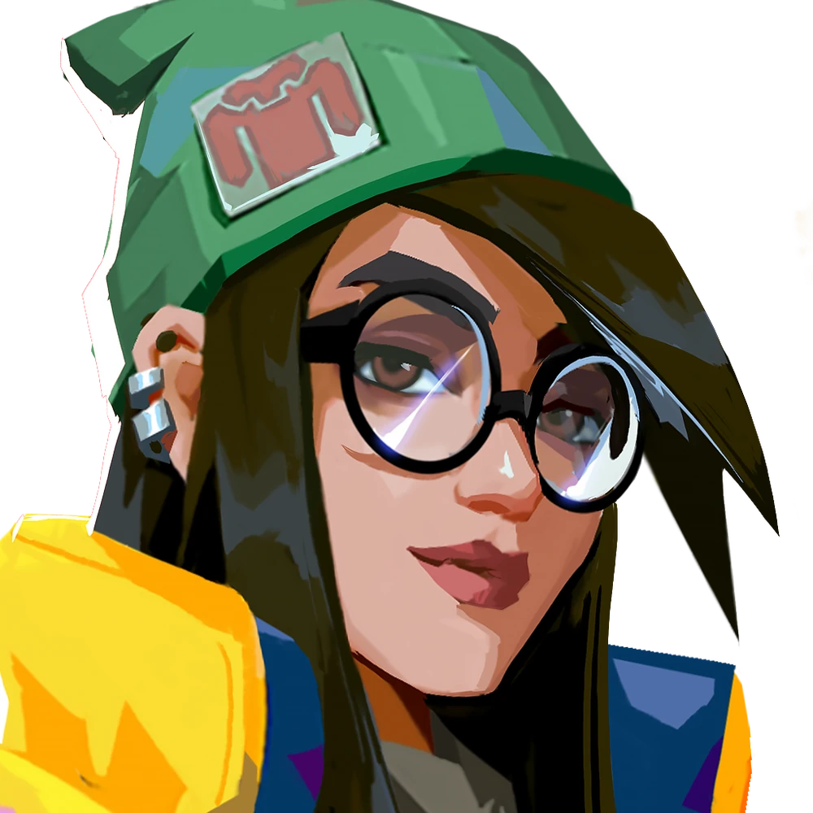
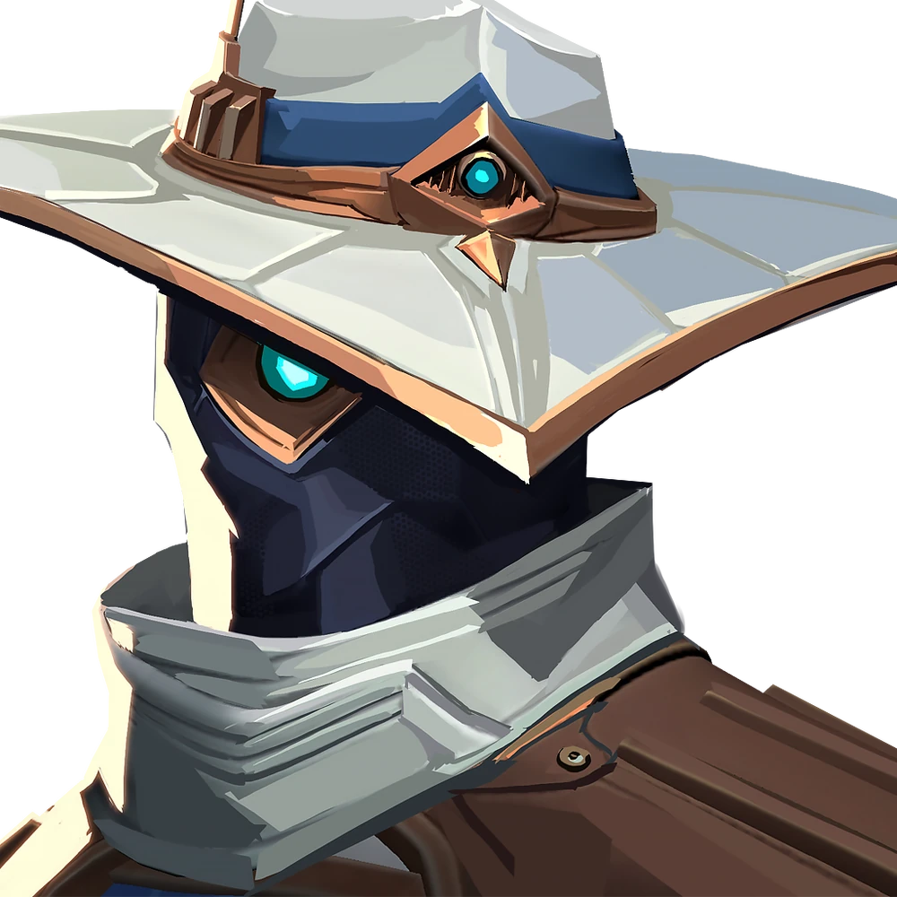
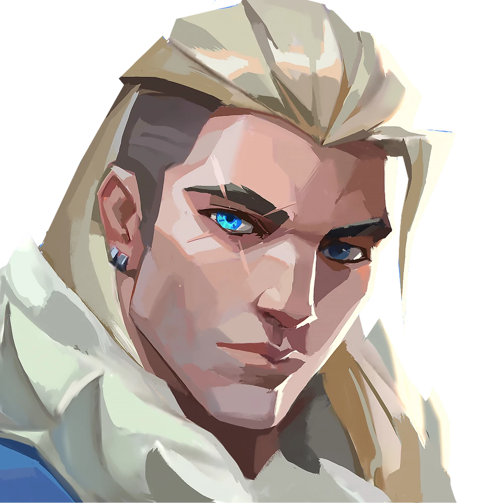
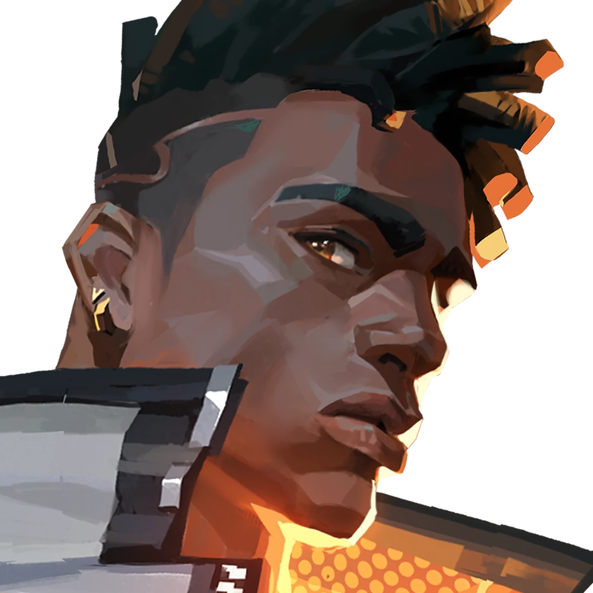
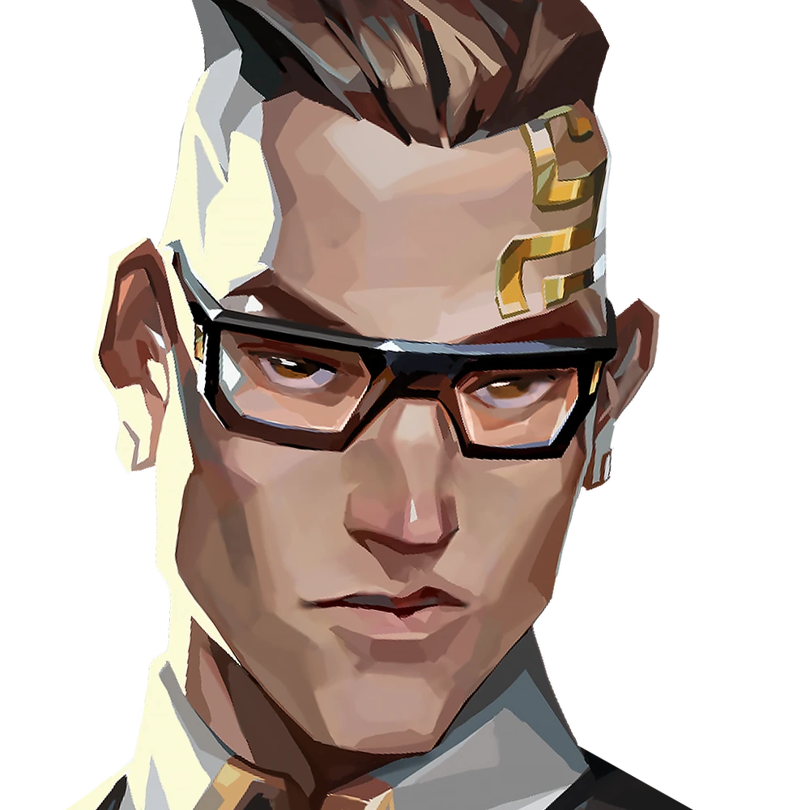
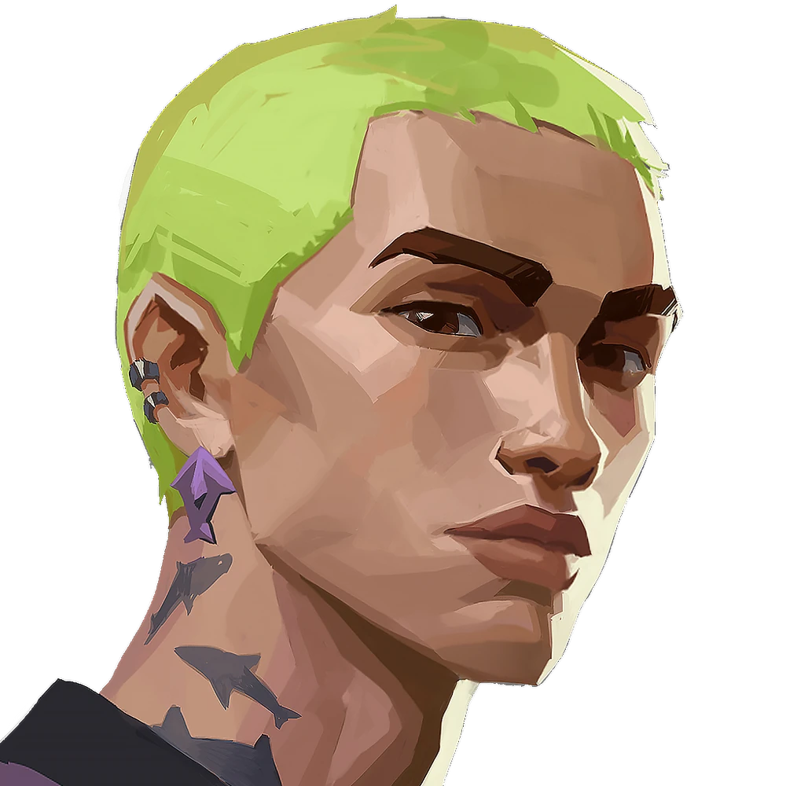

Valorant is a first-person shooter video game that was released in 2020, developed by Riot Games (League of Legends, Teamfight Tactics). It adheres to a format similar to that set by the Counter-Strike games. The game is generally played with two teams, each consisting of 5 players. The players choose characters, which all have different abilities which can affect the end result of the game in different ways. The players are then loaded onto a map within a rotating map pool, which consists of a few sites. Each team is assigned either an attacking or defending role. The primary objective of a round for the defending team is to plant the spike (a type of bomb) at a designated site on the map within a certain time frame and defend the spike until its detonation, or eliminate all members of the opposing attacking team. For the attacking team, their primary objective is to prevent the defending team from planting by stalling for time (eliminating the defending team or denying access to the site), or defusing the spike after it’s been planted. This game typically ends after a team wins 13 rounds. It is made up of two halves, in between which the teams switch roles.
To download VALORANT, click on this link
For beginners, the most important aspects to note are the game mechanics, the gameplay and the skills required to play the game.
GAMEPLAY
In this section, the different game modes will be introduced. This will include a brief introduction of the general format of the game and then more detailed information about the differences between the game modes. This will include a description of each game mode, detailing what sets them all apart. New players will be instructed how the game works in this section essentially.
GAME MECHANICS
This section will detail the various different mechanics of the game, of which the players will need to become familiar with in order to play.
AGENTS
In this subsection, new players will be exposed to the different agents in the game. This would include a list of each agent and their abilities. The four different agent roles will also be explained here, with a description of the style of gameplay each role offers as well as a difficulty rating. The new players will be able to access a short guide to each agent, and how to use their abilities in simple terms and concepts.
Agents in the game
| Agent | Role |
|---|---|
| |
Brimstone i fsfsdfsdfdsf fdfsdfsdfsdfsdf fsdfsdfsfsdfsdfsdf sdfsdfsdfsdfsd ds gdagasf sa d as dsa d asdsa d asd asd adsa da sdasds dadasdsdads dsds dsdsdsdsd sdsdsd sd s ds ds ds d sd sd dd d sds ds ds d sds d asdsa dasd sad d d a ds ad asd asd asd asd as ds ads d asd sad asd |
| |
|
| |
|
|  Killjoy | |
|  Cypher | |
|  Sova | |
| |
|
|  Phoenix | |
| |
|
| |
|
| |
|
| |
|
| |
|
| |
|
| |
|
| |
|
|  Chamber | |
| |
|
| Fade | |
| |
|
| |
|
|  Gekko | |
| |
|
| |
The abilities system will be explained here as an introduction to the currency within the game, and the purchasing of abilities throughout the game will be detailed.
This subsection will end with an introduction of the idea of team composition, which will offer new players a glimpse into how important a good harmony of abilities is to winning games.
WEAPONS

In the weapons subsection, the weapon slots and weapon types will be explained. New players will learn the importance, as well as the pros and cons of each weapon type, and what they have access to during the game. The new players would also learn how to buy a weapon, and what they should buy at each point of the game. Recommendations of beginner-friendly weapons will be made here.
MAPS
Within the maps subsection, players will be exposed to the wide range of maps available within the map pool of the game. As each map has differing elements to be aware of, an explanation of each map will be documented here, detailing the quirks which set it apart from other maps. Tips and recommendations for agents on each map will be provided, and how well each agent synergises with each map will also be provided.
STORE

In the game, there is a store which is available to players at the beginning of each round. This subsection will teach new players how to access this store, and some key concepts such as economy and save rounds/full buy rounds.
SKILLS
In this section, new players will be introduced to the skills which they will need to build up as they gain proficiency in the game. Here, tips and tricks to increasing their skill level will be provided.
AIM
New players will learn of crosshair placement and the importance of aim in this subsection. It will detail how to watch the crosshair throughout the game in order to set up kills as well as the importance of where you aim being the difference between killing and being killed. Suggestions to external software such as AimLabs will be made here, which can help new players to improve their aim.
AGENT MASTERY
Here new players will learn the importance of mastering an agent, and as an extension of that, knowing when to deploy abilities and how to use abilities in various different situations. New players will be recommended to practise playing the agent and choosing an agent which aligns to a playstyle they enjoy, and to continue learning whilst playing the agent.
COMMUNICATION
This subsection will outline the basics of communication during the game. This includes how to type a chat to the team, or the keybinds to transmit your speech to other teammates. Players will be taught the importance of communicating to their team, and what they should communicate (spike being planted/defused, footsteps heard in a specific location of the map etc.)
GAMESENSE
This subsection will discuss the importance of gamesense and thinking during the game. It is not enough to simply shoot the gun when finding an enemy. This part is the culmination of all the skills and mechanics learnt above. It is about analysing the other team’s past behaviour, economy and other factors, and deciding on the best course of action to combat this. This section will instruct new players on the basics which they should be aware of at all times.
CONCLUSION
This section will wrap up the new information that the new players had just learnt. It will provide the best course of action for improvement, as well as an encouraging message in order to help the new player believe they can improve and slowly master Valorant.